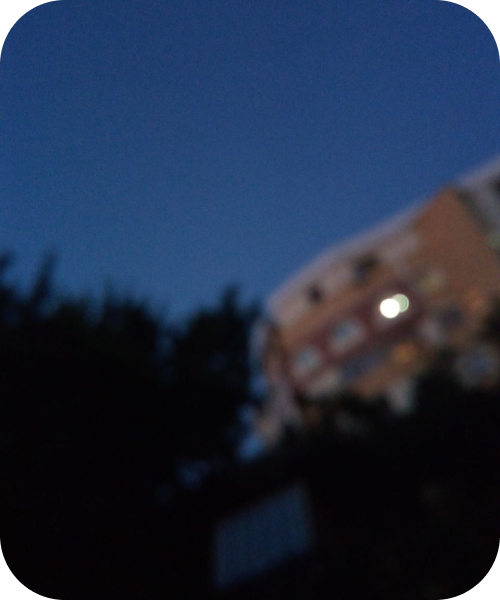

Краткая автобиография
Меня Зовут Павленко Вероника Владимировна. Мне 16 лет, я родилась в Узбекситане в городе Ташкент. Там я жила 14 лет. Сейчас я живу в России в городе Самара.

Я жила в Ташкенте на протяжении 14 лет. Там я ходила в школу № 89, и училась в “Б” классе. У меня был очень дружелюбный класс, во дворе было много друзей. Самым запоминающимся моментом в Ташкенте было лето 2021 года, потому что в 2021 в ноября мы с семьей переехали в Россию. Лето я провела в компании друзей и одноклассников. В ноябре перед уездом мои одноклассники попрощались со мной и пожелали удачию P.s (я до сих пор это все помню)